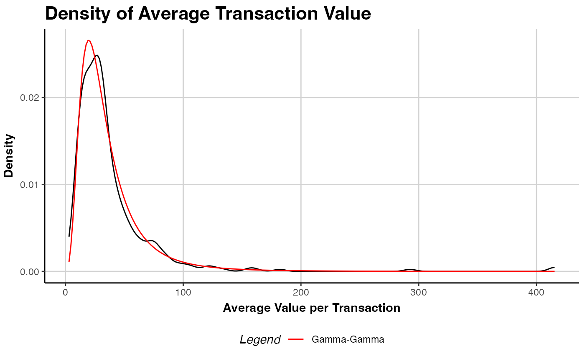

Fits the Gamma-Gamma model on a given object of class clv.data to predict customers' mean
spending per transaction.
The data object on which the model is fitted.
Named start parameters containing the optimization start parameters for the model without covariates.
Additional arguments to control the optimization which are forwarded to optimx::optimx.
If multiple optimization methods are specified, only the result of the last method is further processed.
Whether customer's first transaction are removed. If TRUE all zero-repeaters are excluded from model fitting.
Show details about the running of the function.
Ignored
An object of class clv.gg is returned.
The function summary can be used to obtain and print a summary of the results.
The generic accessor functions coefficients, vcov, fitted,
logLik, AIC, BIC, and nobs are available.
Model parameters for the G/G model are p, q, and gamma. p: shape parameter of the Gamma distribution of the spending process. q: shape parameter of the Gamma distribution to account for customer heterogeneity. gamma: scale parameter of the Gamma distribution to account for customer heterogeneity.
If no start parameters are given, 1.0 is used for all model parameters. All parameters are required
to be > 0.
The Gamma-Gamma model cannot be estimated for data that contains negative prices. Customers with a mean spending of zero or a transaction count of zero are ignored during model fitting.
Colombo R, Jiang W (1999). “A stochastic RFM model.” Journal of Interactive Marketing, 13(3), 2-12.
Fader PS, Hardie BG, Lee K (2005). “RFM and CLV: Using Iso-Value Curves for Customer Base Analysis.” Journal of Marketing Research, 42(4), 415-430.
Fader PS, Hardie BG (2013). “The Gamma-Gamma Model of Monetary Value.” URL http://www.brucehardie.com/notes/025/gamma_gamma.pdf.
# \donttest{
data("apparelTrans")
clv.data.apparel <- clvdata(apparelTrans, date.format = "ymd",
time.unit = "w", estimation.split = 40)
# Fit the gg model
gg(clv.data.apparel)
#> Starting estimation...
#> Estimation finished!
#> Gamma-Gamma Model
#>
#> Call:
#> gg(clv.data = clv.data.apparel)
#>
#> Coefficients:
#> p q gamma
#> 2.305 17.148 279.974
#> KKT1: TRUE
#> KKT2: TRUE
# Give initial guesses for the model parameters
gg(clv.data.apparel,
start.params.model = c(p=0.5, q=15, gamma=2))
#> Starting estimation...
#> Estimation finished!
#> Gamma-Gamma Model
#>
#> Call:
#> gg(clv.data = clv.data.apparel, start.params.model = c(p = 0.5,
#> q = 15, gamma = 2))
#>
#> Coefficients:
#> p q gamma
#> 2.305 17.148 279.976
#> KKT1: TRUE
#> KKT2: TRUE
# pass additional parameters to the optimizer (optimx)
# Use Nelder-Mead as optimization method and print
# detailed information about the optimization process
apparel.gg <- gg(clv.data.apparel,
optimx.args = list(method="Nelder-Mead",
control=list(trace=6)))
#> Starting estimation...
#> fn is fn
#> Looking for method = Nelder-Mead
#> Methods to be used:[1] "Nelder-Mead"
#> optcfg:$fname
#> [1] "fn"
#>
#> $npar
#> [1] 3
#>
#> $ctrl
#> $ctrl$follow.on
#> [1] FALSE
#>
#> $ctrl$save.failures
#> [1] TRUE
#>
#> $ctrl$trace
#> [1] 6
#>
#> $ctrl$kkt
#> [1] TRUE
#>
#> $ctrl$all.methods
#> [1] FALSE
#>
#> $ctrl$starttests
#> [1] FALSE
#>
#> $ctrl$maximize
#> [1] FALSE
#>
#> $ctrl$dowarn
#> [1] TRUE
#>
#> $ctrl$usenumDeriv
#> [1] FALSE
#>
#> $ctrl$kkttol
#> [1] 0.001
#>
#> $ctrl$kkt2tol
#> [1] 1e-06
#>
#> $ctrl$badval
#> [1] 8.988466e+307
#>
#> $ctrl$scaletol
#> [1] 3
#>
#> $ctrl$have.bounds
#> [1] FALSE
#>
#>
#> $usenumDeriv
#> [1] FALSE
#>
#> $ufn
#> function (LL.params, LL.param.names.to.optimx, LL.function.sum,
#> use.interlayer.constr, use.interlayer.reg, reg.lambda.trans,
#> reg.lambda.life, use.cor, ...)
#> {
#> all.other.args <- list(...)
#> names(LL.params) <- LL.param.names.to.optimx
#> interlayers.to.use <- list(callLL = interlayer_callLL)
#> if (use.cor == T & !anyNA(use.cor))
#> interlayers.to.use <- c(correlation = interlayer_correlation,
#> interlayers.to.use)
#> if (use.interlayer.reg == T & !is.null(reg.lambda.trans) &
#> !anyNA(reg.lambda.trans) & !is.null(reg.lambda.life) &
#> !anyNA(reg.lambda.life)) {
#> interlayers.to.use <- c(regularization = interlayer_regularization,
#> interlayers.to.use)
#> }
#> if (use.interlayer.constr == TRUE) {
#> interlayers.to.use <- c(constraints = interlayer_constraints,
#> interlayers.to.use)
#> }
#> interlayer.call.args <- list(next.interlayers = interlayers.to.use,
#> LL.function.sum = LL.function.sum, LL.params = LL.params,
#> reg.lambda.life = reg.lambda.life, reg.lambda.trans = reg.lambda.trans)
#> interlayer.call.args <- modifyList(interlayer.call.args,
#> all.other.args)
#> return(do.call(what = interlayer_callnextinterlayer, args = interlayer.call.args))
#> }
#> <bytecode: 0x7f9e4becd3d8>
#> <environment: namespace:CLVTools>
#>
#> $have.bounds
#> [1] FALSE
#>
#> $method
#> [1] "Nelder-Mead"
#>
#> Method: Nelder-Mead
#> Nelder-Mead direct search function minimizer
#> function value for initial parameters = 1240.281219
#> Scaled convergence tolerance is 1.84816e-05
#> Stepsize computed as 0.100000
#> BUILD 4 1292.921244 1223.563989
#> EXTENSION 6 1240.281219 1128.661157
#> LO-REDUCTION 8 1223.804770 1128.661157
#> EXTENSION 10 1223.563989 1068.349439
#> EXTENSION 12 1142.444973 988.511082
#> LO-REDUCTION 14 1128.661157 988.511082
#> EXTENSION 16 1068.349439 956.324694
#> LO-REDUCTION 18 996.040505 956.324694
#> LO-REDUCTION 20 988.511082 954.177109
#> HI-REDUCTION 22 960.169361 954.177109
#> HI-REDUCTION 24 956.804304 954.177109
#> EXTENSION 26 956.324694 952.236519
#> EXTENSION 28 955.245822 949.900709
#> REFLECTION 30 954.177109 949.356210
#> EXTENSION 32 952.236519 937.295634
#> LO-REDUCTION 34 949.900709 937.295634
#> LO-REDUCTION 36 949.356210 937.295634
#> EXTENSION 38 938.805659 914.134919
#> LO-REDUCTION 40 938.686281 914.134919
#> EXTENSION 42 937.295634 907.757954
#> EXTENSION 44 924.489444 862.957919
#> LO-REDUCTION 46 914.134919 862.957919
#> LO-REDUCTION 48 907.757954 862.957919
#> EXTENSION 50 898.139478 819.596526
#> EXTENSION 52 874.530915 759.983315
#> LO-REDUCTION 54 862.957919 759.983315
#> LO-REDUCTION 56 819.596526 752.383313
#> HI-REDUCTION 58 774.707685 752.383313
#> HI-REDUCTION 60 768.293825 752.383313
#> REFLECTION 62 760.808365 751.244381
#> LO-REDUCTION 64 759.983315 749.622829
#> REFLECTION 66 752.383313 748.162755
#> LO-REDUCTION 68 751.244381 747.967701
#> HI-REDUCTION 70 749.622829 747.734357
#> HI-REDUCTION 72 748.162755 747.089316
#> HI-REDUCTION 74 747.967701 746.544987
#> LO-REDUCTION 76 747.734357 746.544987
#> HI-REDUCTION 78 747.089316 746.544987
#> REFLECTION 80 746.857257 746.510007
#> LO-REDUCTION 82 746.802741 746.497484
#> HI-REDUCTION 84 746.544987 746.465219
#> REFLECTION 86 746.510007 746.355301
#> HI-REDUCTION 88 746.497484 746.355301
#> HI-REDUCTION 90 746.465219 746.355301
#> LO-REDUCTION 92 746.412387 746.355301
#> LO-REDUCTION 94 746.403207 746.355301
#> EXTENSION 96 746.367792 746.294665
#> HI-REDUCTION 98 746.362460 746.294665
#> LO-REDUCTION 100 746.355301 746.294665
#> EXTENSION 102 746.337978 746.219161
#> LO-REDUCTION 104 746.318441 746.219161
#> EXTENSION 106 746.294665 746.126237
#> EXTENSION 108 746.254455 745.982691
#> EXTENSION 110 746.219161 745.879542
#> EXTENSION 112 746.126237 745.588361
#> EXTENSION 114 745.982691 745.147114
#> LO-REDUCTION 116 745.879542 745.147114
#> EXTENSION 118 745.588361 744.502694
#> EXTENSION 120 745.182087 743.995863
#> EXTENSION 122 745.147114 743.677547
#> LO-REDUCTION 124 744.502694 743.677547
#> LO-REDUCTION 126 744.046453 743.677547
#> EXTENSION 128 743.995863 743.472399
#> LO-REDUCTION 130 743.863539 743.413764
#> REFLECTION 132 743.677547 743.213063
#> LO-REDUCTION 134 743.472399 743.182565
#> REFLECTION 136 743.413764 743.124013
#> LO-REDUCTION 138 743.213063 743.097778
#> EXTENSION 140 743.182565 742.867019
#> LO-REDUCTION 142 743.124013 742.867019
#> REFLECTION 144 743.097778 742.840287
#> LO-REDUCTION 146 742.929399 742.796612
#> LO-REDUCTION 148 742.867019 742.791727
#> REFLECTION 150 742.840287 742.736707
#> LO-REDUCTION 152 742.796612 742.736707
#> HI-REDUCTION 154 742.791727 742.736707
#> EXTENSION 156 742.745177 742.609240
#> LO-REDUCTION 158 742.738479 742.609240
#> LO-REDUCTION 160 742.736707 742.609240
#> EXTENSION 162 742.625110 742.507629
#> LO-REDUCTION 164 742.611615 742.507629
#> HI-REDUCTION 166 742.609240 742.507629
#> EXTENSION 168 742.558215 742.423200
#> LO-REDUCTION 170 742.555718 742.423200
#> LO-REDUCTION 172 742.507629 742.423200
#> LO-REDUCTION 174 742.499652 742.423200
#> EXTENSION 176 742.449455 742.333625
#> EXTENSION 178 742.435242 742.248018
#> EXTENSION 180 742.423200 742.119100
#> EXTENSION 182 742.333625 742.019486
#> EXTENSION 184 742.248018 741.605817
#> EXTENSION 186 742.119100 741.340371
#> LO-REDUCTION 188 742.019486 741.340371
#> EXTENSION 190 741.605817 740.345312
#> LO-REDUCTION 192 741.350110 740.345312
#> LO-REDUCTION 194 741.340371 740.345312
#> EXTENSION 196 740.747133 739.814178
#> REFLECTION 198 740.404009 739.677055
#> EXTENSION 200 740.345312 738.953603
#> HI-REDUCTION 202 739.814178 738.953603
#> LO-REDUCTION 204 739.677055 738.953603
#> EXTENSION 206 739.616030 737.942192
#> LO-REDUCTION 208 739.172099 737.942192
#> LO-REDUCTION 210 738.953603 737.942192
#> EXTENSION 212 738.031178 735.715065
#> LO-REDUCTION 214 737.944606 735.715065
#> LO-REDUCTION 216 737.942192 735.715065
#> EXTENSION 218 736.579820 732.512082
#> LO-REDUCTION 220 735.938126 732.512082
#> EXTENSION 222 735.715065 729.412594
#> EXTENSION 224 732.742526 728.118056
#> EXTENSION 226 732.512082 725.822141
#> LO-REDUCTION 228 729.412594 725.564258
#> HI-REDUCTION 230 728.118056 725.564258
#> REFLECTION 232 726.465121 724.197025
#> LO-REDUCTION 234 725.822141 724.197025
#> EXTENSION 236 725.564258 722.973395
#> LO-REDUCTION 238 725.075052 722.973395
#> LO-REDUCTION 240 724.197025 722.973395
#> REFLECTION 242 723.485003 722.577461
#> REFLECTION 244 723.268962 722.544540
#> LO-REDUCTION 246 722.973395 722.501957
#> REFLECTION 248 722.577461 722.332380
#> HI-REDUCTION 250 722.544540 722.332380
#> HI-REDUCTION 252 722.501957 722.332380
#> LO-REDUCTION 254 722.380874 722.332380
#> HI-REDUCTION 256 722.376559 722.315590
#> LO-REDUCTION 258 722.335225 722.308712
#> REFLECTION 260 722.332380 722.304639
#> LO-REDUCTION 262 722.315590 722.296588
#> HI-REDUCTION 264 722.308712 722.295781
#> HI-REDUCTION 266 722.304639 722.294565
#> HI-REDUCTION 268 722.296588 722.294556
#> HI-REDUCTION 270 722.295781 722.293049
#> HI-REDUCTION 272 722.294565 722.292873
#> HI-REDUCTION 274 722.294556 722.292483
#> HI-REDUCTION 276 722.293049 722.292483
#> HI-REDUCTION 278 722.292873 722.292421
#> HI-REDUCTION 280 722.292815 722.292418
#> REFLECTION 282 722.292483 722.292351
#> HI-REDUCTION 284 722.292421 722.292176
#> HI-REDUCTION 286 722.292418 722.292176
#> REFLECTION 288 722.292351 722.292138
#> LO-REDUCTION 290 722.292254 722.292100
#> HI-REDUCTION 292 722.292176 722.292100
#> REFLECTION 294 722.292138 722.292066
#> HI-REDUCTION 296 722.292132 722.292066
#> REFLECTION 298 722.292100 722.292014
#> HI-REDUCTION 300 722.292075 722.292014
#> EXTENSION 302 722.292066 722.291962
#> LO-REDUCTION 304 722.292045 722.291962
#> EXTENSION 306 722.292014 722.291879
#> EXTENSION 308 722.291975 722.291841
#> LO-REDUCTION 310 722.291962 722.291841
#> REFLECTION 312 722.291879 722.291778
#> LO-REDUCTION 314 722.291848 722.291778
#> LO-REDUCTION 316 722.291841 722.291778
#> LO-REDUCTION 318 722.291815 722.291778
#> LO-REDUCTION 320 722.291802 722.291775
#> Exiting from Nelder Mead minimizer
#> 322 function evaluations used
#> Post processing for method Nelder-Mead
#> Successful convergence!
#> Compute Hessian approximation at finish of Nelder-Mead
#> Compute gradient approximation at finish of Nelder-Mead
#> Save results from method Nelder-Mead
#> $par
#> log.p log.q log.gamma
#> 0.8346738 2.8420365 5.6350423
#>
#> $value
#> [1] 722.2918
#>
#> $message
#> NULL
#>
#> $convcode
#> [1] 0
#>
#> $fevals
#> function
#> 322
#>
#> $gevals
#> gradient
#> NA
#>
#> $nitns
#> [1] NA
#>
#> $kkt1
#> [1] TRUE
#>
#> $kkt2
#> [1] TRUE
#>
#> $xtimes
#> user.self
#> 0.066
#>
#> Assemble the answers
#> Estimation finished!
# estimated coefs
coef(apparel.gg)
#> p q gamma
#> 2.304062 17.150658 280.070758
# summary of the fitted model
summary(apparel.gg)
#> Gamma-Gamma Model
#>
#> Call:
#> gg(clv.data = clv.data.apparel, optimx.args = list(method = "Nelder-Mead",
#> control = list(trace = 6)))
#>
#> Fitting period:
#> Estimation start 2005-01-03
#> Estimation end 2005-10-10
#> Estimation length 40.0000 Weeks
#>
#> Coefficients:
#> Estimate Std. Error z-val Pr(>|z|)
#> p 2.3041 0.4793 4.807 1.53e-06 ***
#> q 17.1507 5.9500 2.882 0.00395 **
#> gamma 280.0708 149.3574 1.875 0.06077 .
#> ---
#> Signif. codes: 0 ‘***’ 0.001 ‘**’ 0.01 ‘*’ 0.05 ‘.’ 0.1 ‘ ’ 1
#>
#> Optimization info:
#> LL -722.2918
#> AIC 1450.5835
#> BIC 1461.1479
#> KKT 1 TRUE
#> KKT 2 TRUE
#> fevals 322.0000
#> Method Nelder-Mead
# Plot model vs empirical distribution
plot(apparel.gg)

# predict mean spending and compare against
# actuals in the holdout period
predict(apparel.gg)
#> Id actual.mean.spending predicted.mean.spending
#> 1: 1 0.00000 39.95506
#> 2: 10 0.00000 55.22646
#> 3: 100 32.06652 43.57362
#> 4: 1000 46.51783 41.60911
#> 5: 1001 33.09091 45.58074
#> ---
#> 246: 1219 29.55429 33.58880
#> 247: 122 0.00000 39.95506
#> 248: 1220 0.00000 39.95506
#> 249: 1221 33.62778 34.29084
#> 250: 1222 0.00000 47.35301
# }